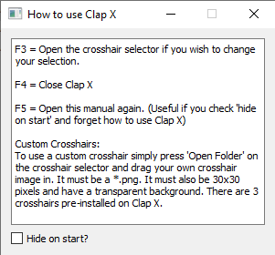
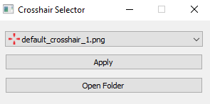

Getting Started
What is Clap X?
Clap X is a free and open source crosshair app created to
users to customize their gaming experience with pre-installed
or their own custom crosshairs
Why Clap X?
Most crosshair applications aren't free. The ones that are free
either are low quality or lack the ability to use your own
crosshairs and only allow pre-installed crosshairs.
Who made Clap X?
I am a Forntite Youtuber and I enjoy programming in my
freetime, and figured this would be a good way to practice.
If you like Clap X or have ideas for it, here is my channel link
https://www.youtube.com/@clapbxt
How to use Clap X?
After either running the installer of un-zipping the zip file, launch Clap X.
The first time you run Clap X you will see this dialog

If you do not see this image, press F5 to open it. This dialog
is the user manual for Clap X. If you ever forget how to use Clap X,
press F5 to view it and relearn. If you check the box at the bottom, it will
not open anymore unless you press F5. After you read and close this dialog,
you will be greeted with the crosshair selector. It looks like this

This allows you to choose your crosshair with the dropdown. There are 3 pre-installed,
but if you wish to use your own, press 'Open Folder' and paste your image in.
Please note that the image must be a *.png, must be 30x30, and must have a transparent
background.
It isn't working!
If you are having difficulty, I apologize. As I am a single person, it is difficult to
find all the bugs. However, I have a few fixes that may help.
If you are playing a fullscreen game, set it to windowed or windowed fullscreen.
I have only tested this on Windows 10 and 11, so if you are on a different OS, it may be the problem.
If these don't fix it, try uninstalling Clap X and re-installing it.